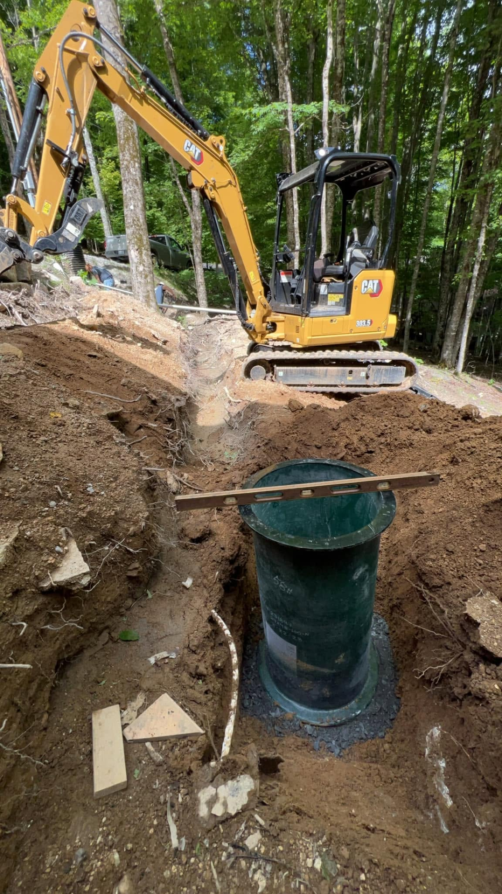
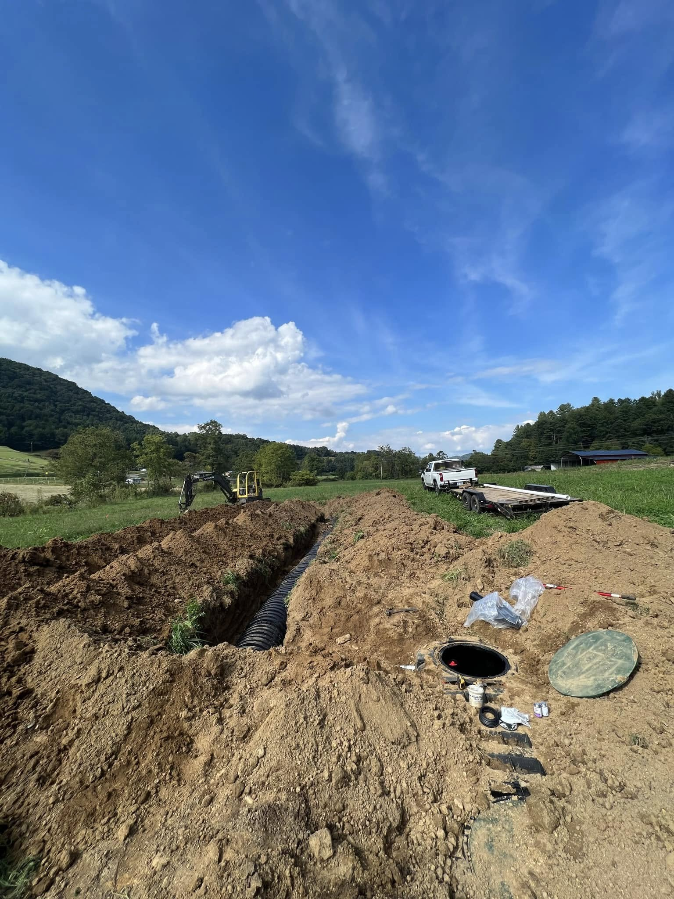
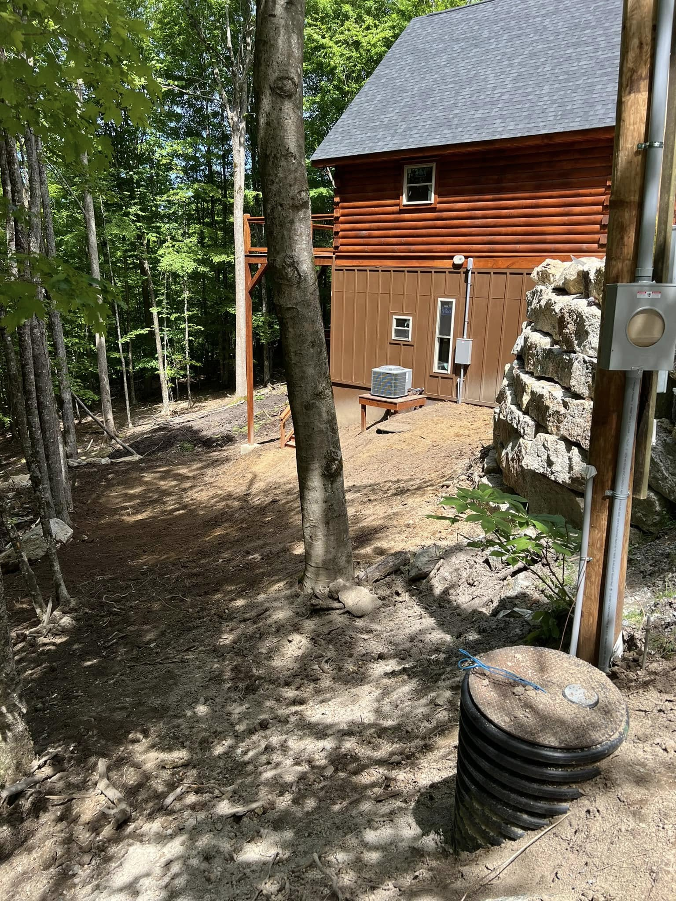
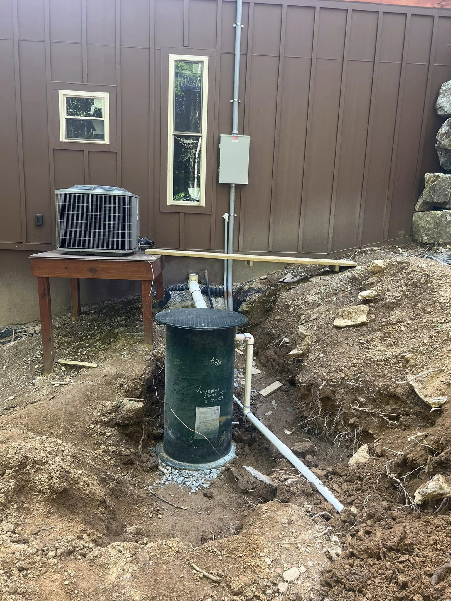
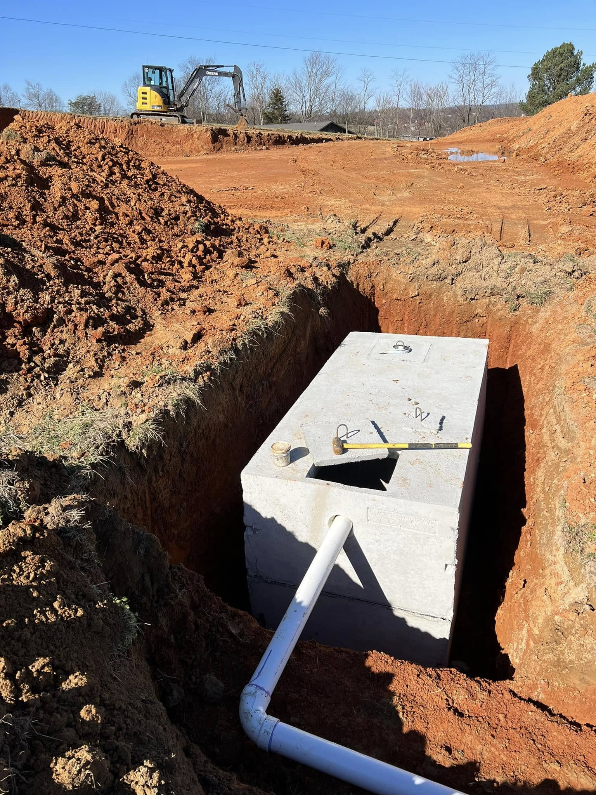
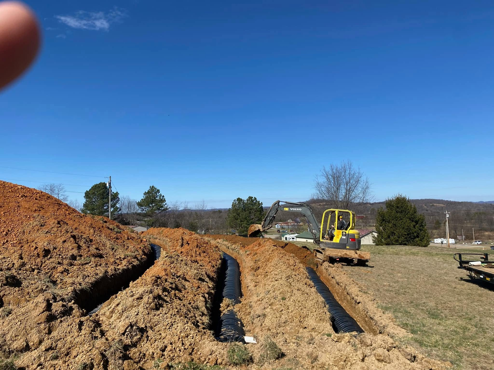
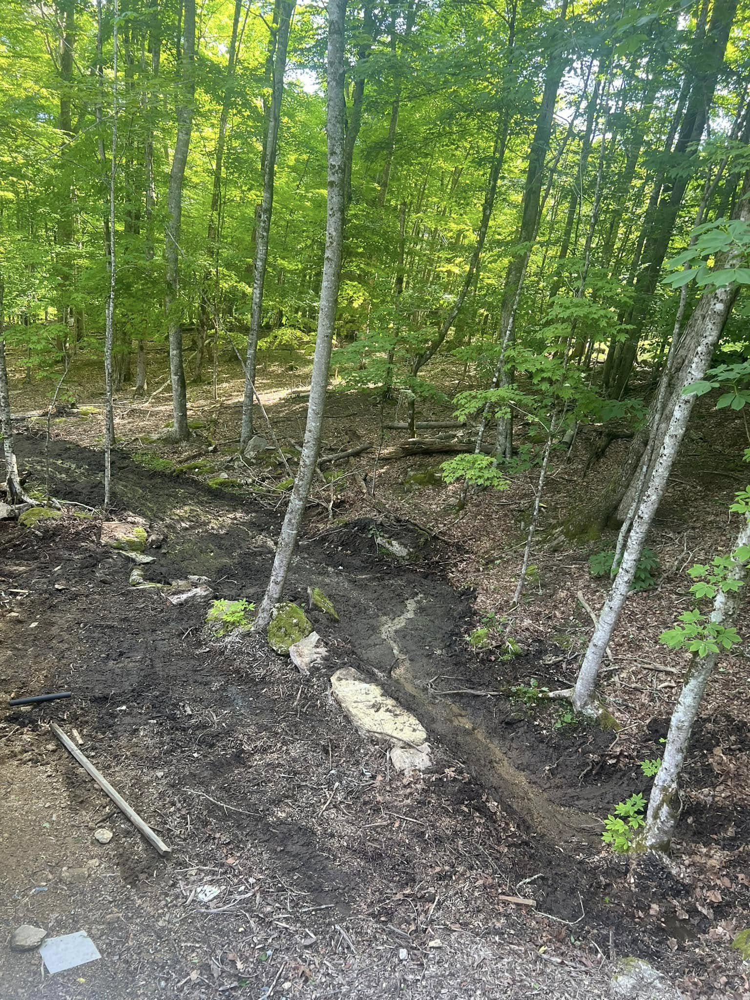
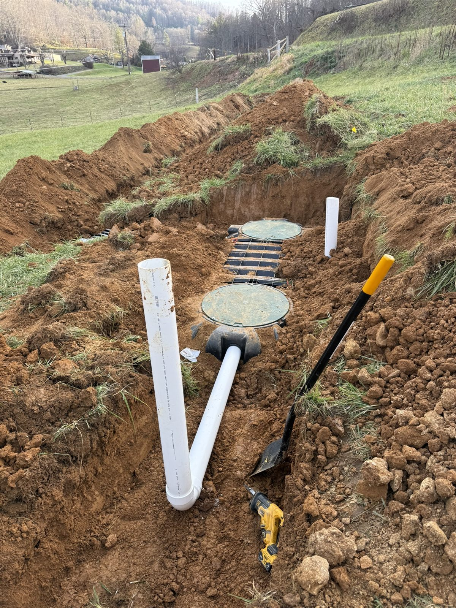

System Excavation
Digging for the tank, basin, and drain field, including the rock and steep-slope work that mountain lots demand.
The full septic scope, from excavation and setting the tank to the drain field and final grade. Built for the steep, rocky, wet ground that makes mountain septic work its own job.

Septic is one of the things AGLM does most. On a recent job near Burnsville we set the basin for the septic pump, covered the septic, ran the water and power ditch, diverted a small spring away from the porch, and final graded around the house. That is the whole picture: the system goes in and the site is left clean and draining.
Because we self-perform the excavation, drainage, and grading, the septic install does not get stuck waiting on another contractor. We coordinate with your engineer or soil scientist and the county health department, then build to the permit.
The site work a septic system needs, handled in-house from the dig to the dirt around it.
Digging for the tank, basin, and drain field, including the rock and steep-slope work that mountain lots demand.
Setting the septic tank and pump basin level and to grade, ready for connection and inspection.
Trenching and laying the drain-field laterals to the permitted layout, on the contour the slope calls for.
Running the sewer, water, and power ditch to the house and tying the system together.
Backfilling and final grading over and around the system so the yard sheds water and looks finished.
Working from the engineer's or soil scientist's design and the county permit, and building the system to what it specifies.

Shallow bedrock and steep ground are routine. We have the machines and the experience to install where it is hard.
We divert springs and surface water away from the field so the system works and the site does not stay wet.
Licensed, code-minded work that inspects clean, so your project keeps moving.







We handle the site work end to end: the excavation, setting the tank and pump basin, the drain field and laterals, running the connections, backfilling, and final grading around the system so the yard drains right. We coordinate with the engineer or soil scientist and the health department on what the permit calls for.
It varies a lot with the system the soil and permit require (conventional gravity versus a pump system), the size, the depth to rock, and how far the lines have to run. We will not throw out a number sight unseen. Walk the site with us and we will give you an honest quote.
Yes. Shallow bedrock, steep slope, and wet ground are normal here, and they are why mountain septic work is its own skill. We have the excavation capability and the grading experience to set a system that works and a site that drains.
Tell us what the system is doing and we will take a look. We can dig to and repair components and re-grade a failing area as part of our site-work scope.
Send us the site and the permit details. We'll get back fast.